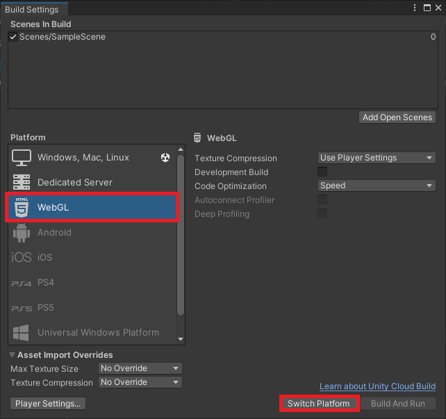

Using TensorFlow.js for In-Browser Object Detection in Unity
- Overview
- Convert Model to TFJS
- Import Assets
- Update JavaScript Utility File
- Update jslib Plugin
- Import Plugin Functions
- Create Object Detector Script
- Update Unity Scene
- Test in Browser
- Summary
Overview
This follow-up post shows you how to modify an existing Unity project from a previous tutorial to use TensorFlow.js for in-browser object detection. We will begin by converting a pre-existing model to the TensorFlow.js format and importing it into Unity. Next, we will update the JavaScript utility file and the jslib plugin from the original project. After setting up the plugin, we will create a script to implement the object detector in Unity and update our scene to use it. Finally, we will test the project in-browser to ensure it works properly.
In-Browser Demo: Hand Gesture Detector
Project Resources
- GitHub Repository: The final Unity project for this tutorial.
- Colormaps: A JSON colormap file that maps each object class to a distinct color.
- TFJSModels: A YOLOX model in TensorFlow.js format.
- In-Browser Hand Gesture Recognition for Unity with Fastai and TensorFlow.js: The previous tutorial.
Convert Model to TFJS
We first need a YOLOX model in TensorFlow.js format. We can use the same steps from the original tutorial to convert the YOLOX model from a previous tutorial. The YOLOX model detects the same hand gestures as the image classifier from the original tutorial.
A link to the model conversion notebook is below, along with links for running the notebook on Google Colab and Kaggle.
| Jupyter Notebook | Colab | Kaggle |
|---|---|---|
| GitHub Repository | Open In Colab | Open in Kaggle |
Import Assets
Open the Unity project from the original tutorial in the Unity Editor. Alternatively, you can create a copy of the project and rename it to something more appropriate. We will first import the colormap and TensorFlow.js model into the Assets folder.
Import color map
We’ll store the colormap JSON file in a new folder called Colormaps. Drag and drop the JSON colormap file from the operating system’s file explorer into the Colormaps folder.
- Google Drive: Colormaps
Import TFJS model
We need to replace the existing TensorFlow.js models in the StreamingAssets folder with the YOLOX model.
- Google Drive: TFJSModels

Update JavaScript Utility File
We’ll update the function in the utils.js file in the StreamingAssets folder to return the raw model output.
Update function to perform inference asynchronously with YOLOX model
// Perform inference with the provided model and input data
async function PerformInferenceAsync(model, float32Data, shape) {
const outputData = tf.tidy(() => {
const input_tensor = tf.tensor(float32Data, shape, 'float32');
// Make a prediction.
return model.predict(input_tensor);
});
return await outputData.data();
}Update jslib Plugin
We also need to make a few updates to the WebGLPlugin.jslib file.
Update function to Initialize TFJS model
We’ll update the InitTFJSModel function to take the path to the YOLOX model.json file and the normalization stats to the plugin.
// Load a TFJS YOLOX model
InitTFJSModel: async function (model_path, mean, std_dev) {
// Convert bytes to the text
let model_path_str = UTF8ToString(model_path);
// Load the TensorFlow.js model at the provided file path
this.model = await tf.loadGraphModel(model_path_str, { fromTFHub: false });
// Check the model input shape
const input_shape = this.model.inputs[0].shape;
console.log(`Input Shape: ${input_shape}`);
// Store normalization stats
this.mean = new Float32Array(buffer, mean, 3);
this.std_dev = new Float32Array(buffer, std_dev, 3);
},Define function to update output array
The size of the raw model output depends on the input resolution. That means we need to update the output array each time we update the input resolution.
// Update the array which stores the raw model output
UpdateOutputArray: function (array_data, size) {
delete this.output_array;
this.output_array = new Float32Array(buffer, array_data, size);
console.log(`New output size JS: ${this.output_array.length}`);
},Update inference function for YOLOX model
Lastly, we need to update the PerformInference function to normalize the input data and fill the shared output array with the raw model output.
// Perform inference with the provided image data
PerformInference: function (image_data, size, width, height) {
// Only perform inference after loading a model
if (typeof this.model == 'undefined') {
console.log("Model not defined yet");
return false;
}
// Initialize an array with the raw image data
const uintArray = new Uint8ClampedArray(buffer, image_data, size, width, height);
// Channels-last order
const [input_array] = new Array(new Array());
// Flip input image from Unity
for (let row = height - 1; row >= 0; row--) {
let slice = uintArray.slice(row * width * 3, (row * width * 3) + (width * 3));
for (let col = 0; col < slice.length; col += 3) {
input_array.push(((slice[col + 0] / 255.0) - this.mean[0]) / this.std_dev[0]);
input_array.push(((slice[col + 1] / 255.0) - this.mean[1]) / this.std_dev[1]);
input_array.push(((slice[col + 2] / 255.0) - this.mean[2]) / this.std_dev[2]);
}
}
// Initialize the input array with the preprocessed input data
const float32Data = Float32Array.from(input_array);
const shape = [1, height, width, 3];
// Pass preprocessed input to the model
PerformInferenceAsync(this.model, float32Data, shape).then(output => {
if (output_array.length == output.length) {
this.output_array.set(output);
}
else {
console.log(`Model output size JS: ${output.length}`);
this.output_array.fill(0);
}
})
return true;
},That’s it for the changes to the plugin code. Next, we need to update the script where we import the functions in Unity.
Import Plugin Functions
We need to update the import line for InitTFJSModel and import the new UpdateOutputArray function in the WebGLPlugin.cs script.
using System.Runtime.InteropServices;
/// <summary>
/// Class with JavaScript plugin functions for WebGL.
/// </summary>
public static class WebGLPlugin
{
// Import "GetExternalJS" plugin function
[DllImport("__Internal")]
public static extern void GetExternalJS();
// Import "SetTFJSBackend" plugin function
[DllImport("__Internal")]
public static extern void SetTFJSBackend(string backend);
// Import "InitTFJSModel" plugin function
[DllImport("__Internal")]
public static extern void InitTFJSModel(string model_path, float[] mean, float[] std);
// Import "UpdateOutputArray" plugin function
[DllImport("__Internal")]
public static extern void UpdateOutputArray(float[] output_data, int size);
// Import "PerformInference" plugin function
[DllImport("__Internal")]
public static extern bool PerformInference(byte[] image_data, int size, int width, int height);
}Changing the import line for InitTFJSModel will cause an error in the ImageClassifier script, but we will resolve this in the next section.
Create Object Detector Script
We’ll replace the ImageClassifier script from the original tutorial with a new script called ObjectDetector. It will handle getting input images, sending them to the model, processing the model output, and drawing bounding boxes around detected objects. Delete the existing ImageClassifier script.

Add required namespaces
- System: Contains fundamental classes and base classes that define commonly-used value and reference data types, events and event handlers, interfaces, attributes, and processing exceptions.
- UnityEngine.UI: Provides access to UI elements.
- UnityEngine.Rendering: Provides access to the elements of the rendering pipeline.
- System.IO: Contains types that allow reading and writing to files and data streams, and types that provide basic file and directory support.
- UnityEngine.Networking: Provides access to the UnityWebRequest module to communicate with http services.
- System.Linq: Provides classes and interfaces that support queries that use Language-Integrated Query (LINQ).
using System.Collections;
using System.Collections.Generic;
using UnityEngine;
using System;
using UnityEngine.UI;
using System.IO;
using UnityEngine.Networking;
using System.Linq;Add code to create a list of available TFJS models
We can use the same code to create a list of available TFJS models used in the ImageClassifier script. This code will go right below the namespaces.
#if UNITY_EDITOR
using UnityEditor;
[InitializeOnLoad]
public class Startup
{
// A helper class that stores the name and file path for a TensorFlow.js model
[System.Serializable]
class ModelData
{
public string name;
public string path;
public ModelData(string name, string path)
{
this.name = name;
this.path = path;
}
}
// A helper class that stores a list of TensorFlow.js model names and file paths
[System.Serializable]
class ModelList
{
public List<ModelData> models;
public ModelList(List<ModelData> models)
{
this.models = models;
}
}
static Startup()
{
string tfjsModelsDir = "TFJSModels";
List<ModelData> models = new List<ModelData>();
Debug.Log("Available models");
// Get the paths for each model folder
foreach (string dir in Directory.GetDirectories($"{Application.streamingAssetsPath}/{tfjsModelsDir}"))
{
string dirStr = dir.Replace("\\", "/");
// Extract the model folder name
string[] splits = dirStr.Split('/');
string modelName = splits[splits.Length - 1];
// Get the paths for the model.json file for each model
foreach (string file in Directory.GetFiles(dirStr))
{
if (file.EndsWith("model.json"))
{
string fileStr = file.Replace("\\", "/").Replace(Application.streamingAssetsPath, "");
models.Add(new ModelData(modelName, fileStr));
}
}
}
ModelList modelList = new ModelList(models);
// Format the list of available models as a string in JSON format
string json = JsonUtility.ToJson(modelList);
Debug.Log($"Model List JSON: {json}");
// Write the list of available TensorFlow.js models to a JSON file
using StreamWriter writer = new StreamWriter($"{Application.streamingAssetsPath}/models.json");
writer.Write(json);
}
}
#endifDefine public variables
The required public variables are mostly the same as the ImageClassifier script.
Define scene object variables
We’ll add a new variable to indicate whether to mirror the in-scene screen.
[Header("Scene Objects")]
[Tooltip("The Screen object for the scene")]
public Transform screen;
[Tooltip("Mirror the in-game screen.")]
public bool mirrorScreen = true;Define data processing variables
We’ll increase the default target input resolution from 216 to 224.
[Header("Data Processing")]
[Tooltip("The target minimum model input dimensions")]
public int targetDim = 224;Define output processing variables
We’ll replace the classLabels TextAsset with a variable for the colormap JSON file.
[Header("Output Processing")]
[Tooltip("A json file containing the colormaps for object classes")]
public TextAsset colormapFile;
[Tooltip("Minimum confidence score for keeping predictions")]
[Range(0, 1f)]
public float minConfidence = 0.5f;Define variables for debugging (unchanged)
[Header("Debugging")]
[Tooltip("Print debugging messages to the console")]
public bool printDebugMessages = true;Define webcam variables (unchanged)
[Header("Webcam")]
[Tooltip("Use a webcam as input")]
public bool useWebcam = false;
[Tooltip("The requested webcam dimensions")]
public Vector2Int webcamDims = new Vector2Int(1280, 720);
[Tooltip("The requested webcam framerate")]
[Range(0, 60)]
public int webcamFPS = 60;Define variables for user interface
We’ll replace the displayPredictedClass GUI variable with two new variables that control displaying bounding boxes and the number of detected objects.
[Header("GUI")]
[Tooltip("Display predicted class")]
public bool displayBoundingBoxes = true;
[Tooltip("Display number of detected objects")]
public bool displayProposalCount = true;
[Tooltip("Display fps")]
public bool displayFPS = true;
[Tooltip("The on-screen text color")]
public Color textColor = Color.yellow;
[Tooltip("The scale value for the on-screen font size")]
[Range(0, 99)]
public int fontScale = 50;
[Tooltip("The number of seconds to wait between refreshing the fps value")]
[Range(0.01f, 1.0f)]
public float fpsRefreshRate = 0.1f;
[Tooltip("The toggle for using a webcam as the input source")]
public Toggle useWebcamToggle;
[Tooltip("The dropdown menu that lists available webcam devices")]
public Dropdown webcamDropdown;
[Tooltip("The dropdown menu that lists available TFJS models")]
public Dropdown modelDropdown;
[Tooltip("The dropdown menu that lists available TFJS backends")]
public Dropdown backendDropdown;Define TensorFlow.js variables (unchanged)
[Header("TFJS")]
[Tooltip("The name of the TFJS models folder")]
public string tfjsModelsDir = "TFJSModels";Define private variables
We’ll add the required private variables right below the public variables.
Define private webcam variables (unchanged)
// List of available webcam devices
private WebCamDevice[] webcamDevices;
// Live video input from a webcam
private WebCamTexture webcamTexture;
// The name of the current webcam device
private string currentWebcam;Define input variables (unchanged)
// The test image dimensions
Vector2Int imageDims;
// The test image texture
Texture imageTexture;
// The current screen object dimensions
Vector2Int screenDims;
// The model GPU input texture
RenderTexture inputTextureGPU;
// The model CPU input texture
Texture2D inputTextureCPU;Define variables for colormap
We’ll create a couple of classes to parse the JSON colormap content.
// A class for parsing in colormaps from a JSON file
[System.Serializable]
class ColorMap { public string label; public float[] color; }
// A class for reading in a list of colormaps from a JSON file
[System.Serializable]
class ColorMapList { public List<ColorMap> items; }
// Stores a list of colormaps from a JSON file
private ColorMapList colormapList;
// A list of colors that map to class labels
private Color[] colors;
// A list of single pixel textures that map to class labels
private Texture2D[] colorTextures;Define variable to track whether a model is initialized (unchanged)
// Stores whether the TensorFlow.js model is ready for inference
bool modelInitialized;Define variables for tracking the framerate (unchanged)
// The current frame rate value
private int fps = 0;
// Controls when the frame rate value updates
private float fpsTimer = 0f;Define variables to store values for GUI dropdowns (unchanged)
// File paths for the available TFJS models
List<string> modelPaths = new List<string>();
// Names of the available TFJS models
List<string> modelNames = new List<string>();
// Names of the available TFJS backends
List<string> tfjsBackends = new List<string> { "webgl" };Define variables for reading the models.json file (unchanged)
// A helper class to store the name and file path of a TensorFlow.js model
[System.Serializable]
class ModelData { public string name; public string path; }
// A helper class to store a read a list of available TensorFlow.js models from a JSON file
[System.Serializable]
class ModelList { public List<ModelData> models; }Define variables for normalization stats
The YOLOX model uses the standard ImageNet normalization stats from PyTorch.
// The normalization stats for the YOLOX model
float[] mean = new float[] { 0.485f, 0.456f, 0.406f };
float[] std = new float[] { 0.229f, 0.224f, 0.225f };Define struct to store information for object predictions
/// <summary>
/// Stores the information for a single object
/// </summary>
public struct Object
{
// The X coordinate for the top left bounding box corner
public float x0;
// The Y coordinate for the top left bounding box cornder
public float y0;
// The width of the bounding box
public float width;
// The height of the bounding box
public float height;
// The object class index for the detected object
public int label;
// The model confidence score for the object
public float prob;
public Object(float x0, float y0, float width, float height, int label, float prob)
{
this.x0 = x0;
this.y0 = y0;
this.width = width;
this.height = height;
this.label = label;
this.prob = prob;
}
}Define struct to store grid offset and stride values
// Store grid offset and stride values to decode a section of the model output
public struct GridAndStride
{
public int grid0;
public int grid1;
public int stride;
public GridAndStride(int grid0, int grid1, int stride)
{
this.grid0 = grid0;
this.grid1 = grid1;
this.stride = stride;
}
}Define variables for processing model output
// Stores information for the current list of detected objects
private Object[] objectInfoArray;
// Stores the grid and stride values to navigate the raw model output
List<GridAndStride> grid_strides = new List<GridAndStride>();
// The stride values used to generate the gride_strides vector
int[] strides = new int[] { 8, 16, 32 };
// Stores the raw model output
float[] output_array;
// The scale values used to adjust the model output to the source image resolution
float scale_x;
float scale_y;
// Stores the number of detected objects
private int numObjects;Define Initialization Methods
The initialization methods are identical to those from the ImageClassifier script except for UpdateTFJSModel.
Define method to initialize a webcam device (unchanged)
/// <summary>
/// Initialize the selected webcam device
/// </summary>
/// <param name="deviceName">The name of the selected webcam device</param>
void InitializeWebcam(string deviceName)
{
// Stop any webcams already playing
if (webcamTexture && webcamTexture.isPlaying) webcamTexture.Stop();
// Create a new WebCamTexture
webcamTexture = new WebCamTexture(deviceName, webcamDims.x, webcamDims.y, webcamFPS);
// Start the webcam
webcamTexture.Play();
// Check if webcam is playing
useWebcam = webcamTexture.isPlaying;
// Update toggle value
useWebcamToggle.SetIsOnWithoutNotify(useWebcam);
Debug.Log(useWebcam ? "Webcam is playing" : "Webcam not playing, option disabled");
}Define method to initialize the in-scene screen object (unchanged)
/// <summary>
/// Resize and position an in-scene screen object
/// </summary>
void InitializeScreen()
{
// Set the texture for the screen object
screen.gameObject.GetComponent<MeshRenderer>().material.mainTexture = useWebcam ? webcamTexture : imageTexture;
// Set the screen dimensions
screenDims = useWebcam ? new Vector2Int(webcamTexture.width, webcamTexture.height) : imageDims;
// Flip the screen around the Y-Axis when using webcam
float yRotation = useWebcam ? 180f : 0f;
// Invert the scale value for the Z-Axis when using webcam
float zScale = useWebcam ? -1f : 1f;
// Set screen rotation
screen.rotation = Quaternion.Euler(0, yRotation, 0);
// Adjust the screen dimensions
screen.localScale = new Vector3(screenDims.x, screenDims.y, zScale);
// Adjust the screen position
screen.position = new Vector3(screenDims.x / 2, screenDims.y / 2, 1);
}Define method to switch TensorFlow.js models
/// <summary>
/// Load a TensorFlow.js model
/// </summary>
public void UpdateTFJSModel()
{
// Load TensorFlow.js model in JavaScript plugin
WebGLPlugin.InitTFJSModel(modelPaths[modelDropdown.value], mean, std);
}Define method to read the list of available TensorFlow.js models (unchanged)
/// <summary>
/// Get the names and paths of the available TensorFlow.js models
/// </summary>
/// <param name="json"></param>
void GetTFJSModels(string json)
{
ModelList modelList = JsonUtility.FromJson<ModelList>(json);
foreach (ModelData model in modelList.models)
{
//Debug.Log($"{model.name}: {model.path}");
modelNames.Add(model.name);
string path = $"{Application.streamingAssetsPath}{model.path}";
modelPaths.Add(path);
}
// Remove default dropdown options
modelDropdown.ClearOptions();
// Add TFJS model names to menu
modelDropdown.AddOptions(modelNames);
// Select the first option in the dropdown
modelDropdown.SetValueWithoutNotify(0);
}Define method to download the list of available TensorFlow.js models (unchanged)
/// <summary>
/// Download the JSON file with the available TFJS model information
/// </summary>
/// <param name="uri"></param>
/// <returns></returns>
IEnumerator GetRequest(string uri)
{
using (UnityWebRequest webRequest = UnityWebRequest.Get(uri))
{
// Request and wait for the desired page.
yield return webRequest.SendWebRequest();
string[] pages = uri.Split('/');
int page = pages.Length - 1;
switch (webRequest.result)
{
case UnityWebRequest.Result.ConnectionError:
case UnityWebRequest.Result.DataProcessingError:
Debug.LogError(pages[page] + ": Error: " + webRequest.error);
break;
case UnityWebRequest.Result.ProtocolError:
Debug.LogError(pages[page] + ": HTTP Error: " + webRequest.error);
break;
case UnityWebRequest.Result.Success:
Debug.Log(pages[page] + ":\nReceived: " + webRequest.downloadHandler.text);
// Extract the available model names and file paths from the JSON string
GetTFJSModels(webRequest.downloadHandler.text);
// Initialize one of the available TensorFlow.js models
UpdateTFJSModel();
break;
}
}
}Define method to initialize GUI dropdown menu options (unchanged)
/// <summary>
/// Initialize the GUI dropdown list
/// </summary>
void InitializeDropdown()
{
// Create list of webcam device names
List<string> webcamNames = new List<string>();
foreach (WebCamDevice device in webcamDevices) webcamNames.Add(device.name);
// Remove default dropdown options
webcamDropdown.ClearOptions();
// Add webcam device names to dropdown menu
webcamDropdown.AddOptions(webcamNames);
// Set the value for the dropdown to the current webcam device
webcamDropdown.SetValueWithoutNotify(webcamNames.IndexOf(currentWebcam));
// Get the available TensorFlow.js models
string modelListPath = $"{Application.streamingAssetsPath}/models.json";
StartCoroutine(GetRequest(modelListPath));
// Remove default dropdown options
backendDropdown.ClearOptions();
// Add TFJS backend names to menu
backendDropdown.AddOptions(tfjsBackends);
// Select the first option in the dropdown
backendDropdown.SetValueWithoutNotify(0);
}Define method to initialize the in-scene camera object (unchanged)
/// <summary>
/// Resize and position the main camera based on an in-scene screen object
/// </summary>
/// <param name="screenDims">The dimensions of an in-scene screen object</param>
void InitializeCamera(Vector2Int screenDims, string cameraName = "Main Camera")
{
// Get a reference to the Main Camera GameObject
GameObject camera = GameObject.Find(cameraName);
// Adjust the camera position to account for updates to the screenDims
camera.transform.position = new Vector3(screenDims.x / 2, screenDims.y / 2, -10f);
// Render objects with no perspective (i.e. 2D)
camera.GetComponent<Camera>().orthographic = true;
// Adjust the camera size to account for updates to the screenDims
camera.GetComponent<Camera>().orthographicSize = screenDims.y / 2;
}Define Awake method (unchanged)
// Awake is called when the script instance is being loaded
void Awake()
{
WebGLPlugin.GetExternalJS();
}Define Start method
In the Start method, we need to initialize the color map variables with the JSON file.
// Start is called before the first frame update
void Start()
{
// Get the source image texture
imageTexture = screen.gameObject.GetComponent<MeshRenderer>().material.mainTexture;
// Get the source image dimensions as a Vector2Int
imageDims = new Vector2Int(imageTexture.width, imageTexture.height);
// Initialize list of available webcam devices
webcamDevices = WebCamTexture.devices;
foreach (WebCamDevice device in webcamDevices) Debug.Log(device.name);
currentWebcam = webcamDevices[0].name;
useWebcam = webcamDevices.Length > 0 ? useWebcam : false;
// Initialize webcam
if (useWebcam) InitializeWebcam(currentWebcam);
// Resize and position the screen object using the source image dimensions
InitializeScreen();
// Resize and position the main camera using the source image dimensions
InitializeCamera(screenDims);
// Initialize list of color maps from JSON file
colormapList = JsonUtility.FromJson<ColorMapList>(colormapFile.text);
// Initialize the list of colors
colors = new Color[colormapList.items.Count];
// Initialize the list of color textures
colorTextures = new Texture2D[colormapList.items.Count];
// Populate the color and color texture arrays
for (int i = 0; i < colors.Length; i++)
{
// Create a new color object
colors[i] = new Color(
colormapList.items[i].color[0],
colormapList.items[i].color[1],
colormapList.items[i].color[2]);
// Create a single-pixel texture
colorTextures[i] = new Texture2D(1, 1);
colorTextures[i].SetPixel(0, 0, colors[i]);
colorTextures[i].Apply();
}
// Initialize the webcam dropdown list
InitializeDropdown();
// Update the current TensorFlow.js compute backend
WebGLPlugin.SetTFJSBackend(tfjsBackends[backendDropdown.value]);
}Define Processing Methods
The preprocessing methods are identical to those from the ImageClassifier script. However, we need to add some post-processing methods to extract object predictions from the raw model output.
Define method to calculate input resolution (unchanged)
/// <summary>
/// Scale the source image resolution to the target input dimensions
/// while maintaing the source aspect ratio.
/// </summary>
/// <param name="imageDims"></param>
/// <param name="targetDims"></param>
/// <returns></returns>
Vector2Int CalculateInputDims(Vector2Int imageDims, int targetDim)
{
// Clamp the minimum dimension value to 64px
targetDim = Mathf.Max(targetDim, 64);
Vector2Int inputDims = new Vector2Int();
// Calculate the input dimensions using the target minimum dimension
if (imageDims.x >= imageDims.y)
{
inputDims[0] = (int)(imageDims.x / ((float)imageDims.y / (float)targetDim));
inputDims[1] = targetDim;
}
else
{
inputDims[0] = targetDim;
inputDims[1] = (int)(imageDims.y / ((float)imageDims.x / (float)targetDim));
}
return inputDims;
}Define method to scale bounding boxes to the display resolution
/// <summary>
/// Scale the latest bounding boxes to the display resolution
/// </summary>
public void ScaleBoundingBoxes()
{
// Process new detected objects
for (int i = 0; i < objectInfoArray.Length; i++)
{
// The smallest dimension of the screen
float minScreenDim = Mathf.Min(screen.transform.localScale.x, screen.transform.localScale.y);
// The smallest input dimension
int minInputDim = Mathf.Min(inputTextureCPU.width, inputTextureCPU.height);
// Calculate the scale value between the in-game screen and input dimensions
float minImgScale = minScreenDim / minInputDim;
// Calculate the scale value between the in-game screen and display
float displayScale = Screen.height / screen.transform.localScale.y;
// Scale bounding box to in-game screen resolution and flip the bbox coordinates vertically
float x0 = objectInfoArray[i].x0 * minImgScale;
float y0 = (inputTextureCPU.height - objectInfoArray[i].y0) * minImgScale;
float width = objectInfoArray[i].width * minImgScale;
float height = objectInfoArray[i].height * minImgScale;
// Mirror bounding box across screen
if (mirrorScreen && useWebcam)
{
x0 = screen.transform.localScale.x - x0 - width;
}
// Scale bounding boxes to display resolution
objectInfoArray[i].x0 = x0 * displayScale;
objectInfoArray[i].y0 = y0 * displayScale;
objectInfoArray[i].width = width * displayScale;
objectInfoArray[i].height = height * displayScale;
// Offset the bounding box coordinates based on the difference between the in-game screen and display
objectInfoArray[i].x0 += (Screen.width - screen.transform.localScale.x * displayScale) / 2;
}
}Define method to generate stride values to navigate the raw model output
We’ll generate offset values based on the input dimensions and stride values, which we can use to traverse the output array.
/// <summary>
/// Generate offset values to navigate the raw model output
/// </summary>
/// <param name="height">The model input height</param>
/// <param name="width">The model input width</param>
/// <returns></returns>
List<GridAndStride> GenerateGridStrides(int height, int width)
{
List<GridAndStride> grid_strides = new List<GridAndStride>();
// Iterate through each stride value
foreach (int stride in strides)
{
// Calculate the grid dimensions
int grid_height = height / stride;
int grid_width = width / stride;
Debug.Log($"Gride: {grid_height} x {grid_width}");
// Store each combination of grid coordinates
for (int g1 = 0; g1 < grid_height; g1++)
{
for (int g0 = 0; g0 < grid_width; g0++)
{
grid_strides.Add(new GridAndStride(g0, g1, stride));
}
}
}
return grid_strides;
}Define method to generate object detection proposals from the raw model output
Next, we define a method to iterate through the output array and decode the bounding box information for each object proposal. We only want to keep the ones with a high enough confidence score. The model predicts the center coordinates of a bounding box, but we store the coordinates for the top-left corner as we use this to draw the rectangles on the screen.
/// <summary>
/// Generate object detection proposals from the raw model output
/// </summary>
/// <param name="model_output">The raw model output</param>
/// <param name="proposal_length">The length of a single proposal</param>
/// <returns></returns>
List<Object> GenerateYOLOXProposals(float[] model_output, int proposal_length)
{
List<Object> proposals = new List<Object>();
// Obtain the number of classes the model was trained to detect
int num_classes = proposal_length - 5;
for (int anchor_idx = 0; anchor_idx < grid_strides.Count; anchor_idx++)
{
// Get the current grid and stride values
var grid0 = grid_strides[anchor_idx].grid0;
var grid1 = grid_strides[anchor_idx].grid1;
var stride = grid_strides[anchor_idx].stride;
// Get the starting index for the current proposal
var start_idx = anchor_idx * proposal_length;
// Get the coordinates for the center of the predicted bounding box
var x_center = (model_output[start_idx + 0] + grid0) * stride;
var y_center = (model_output[start_idx + 1] + grid1) * stride;
// Get the dimensions for the predicted bounding box
var w = Mathf.Exp(model_output[start_idx + 2]) * stride;
var h = Mathf.Exp(model_output[start_idx + 3]) * stride;
// Calculate the coordinates for the upper left corner of the bounding box
var x0 = x_center - w * 0.5f;
var y0 = y_center - h * 0.5f;
x0 /= scale_x;
y0 /= scale_y;
w /= scale_x;
h /= scale_y;
// Get the confidence score that an object is present
var box_objectness = model_output[start_idx + 4];
// Initialize object struct with bounding box information
Object obj = new Object(x0, y0, w, h, 0, 0);
// Find the object class with the highest confidence score
for (int class_idx = 0; class_idx < num_classes; class_idx++)
{
// Get the confidence score for the current object class
var box_cls_score = model_output[start_idx + 5 + class_idx];
// Calculate the final confidence score for the object proposal
var box_prob = box_objectness * box_cls_score;
// Check for the highest confidence score
if (box_prob > obj.prob)
{
obj.label = class_idx;
obj.prob = box_prob;
}
}
// Only add object proposals with high enough confidence scores
if (obj.prob > minConfidence) proposals.Add(obj);
}
// Sort the proposals based on the confidence score in descending order
proposals = proposals.OrderByDescending(x => x.prob).ToList();
return proposals;
}Define function to calculate the union area of two bounding boxes
/// <summary>
/// Calculate the union area of two bounding boxes
/// </summary>
/// <param name="a"></param>
/// <param name="b"></param>
/// <returns></returns>
float CalcUnionArea(Object a, Object b)
{
var x = Mathf.Min(a.x0, b.x0);
var y = Mathf.Min(a.y0, b.y0);
var w = Mathf.Max(a.x0 + a.width, b.x0 + b.width) - x;
var h = Mathf.Max(a.y0 + a.height, b.y0 + b.height) - y;
return w * h;
}Define function to calculate the intersection area of two bounding boxes
/// <summary>
/// Calculate the intersection area of two bounding boxes
/// </summary>
/// <param name="a"></param>
/// <param name="b"></param>
/// <returns></returns>
float CalcInterArea(Object a, Object b)
{
var x = Mathf.Max(a.x0, b.x0);
var y = Mathf.Max(a.y0, b.y0);
var w = Mathf.Min(a.x0 + a.width, b.x0 + b.width) - x;
var h = Mathf.Min(a.y0 + a.height, b.y0 + b.height) - y;
return w * h;
}Define function to sort bounding box proposals using Non-Maximum Suppression
/// <summary>
/// Sort bounding box proposals using Non-Maximum Suppression
/// </summary>
/// <param name="proposals"></param>
/// <param name="nms_thresh"></param>
/// <returns></returns>
List<int> NMSSortedBoxes(List<Object> proposals, float nms_thresh = 0.45f)
{
List<int> proposal_indices = new List<int>();
for (int i = 0; i < proposals.Count; i++)
{
var a = proposals[i];
bool keep = true;
// Check if the current object proposal overlaps any selected objects too much
foreach (int j in proposal_indices)
{
var b = proposals[j];
// Calculate the area where the two object bounding boxes overlap
var inter_area = CalcInterArea(a, b);
// Calculate the union area of both bounding boxes
var union_area = CalcUnionArea(a, b);
// Ignore object proposals that overlap selected objects too much
if (inter_area / union_area > nms_thresh) keep = false;
}
// Keep object proposals that do not overlap selected objects too much
if (keep) proposal_indices.Add(i);
}
return proposal_indices;
}Define Update method
Most of the Update method is identical to the one from the ImageClassifier script, besides the post-processing steps. Although, there is an odd quirk with part of the YOLOX model in TensorFlow.js.
The YOLOX model requires input dimensions that are multiples of 32. However, if we perform inference with such an input resolution, we get an error like the one below.
Uncaught (in promise) Error: Error in concat4D: Shape of tensors[1] (1,3,111,112) does not match the shape of the rest (1,3,112,112) along the non-concatenated axis 1.I don’t know why this occurs in TensorFlow.js, but we can resolve it by adding 1 to each input dimension. So instead of an input resolution of 224x224, we have 225x225.
// Update is called once per frame
void Update()
{
useWebcam = webcamDevices.Length > 0 ? useWebcam : false;
if (useWebcam)
{
// Initialize webcam if it is not already playing
if (!webcamTexture || !webcamTexture.isPlaying) InitializeWebcam(currentWebcam);
// Skip the rest of the method if the webcam is not initialized
if (webcamTexture.width <= 16) return;
// Make sure screen dimensions match webcam resolution when using webcam
if (screenDims.x != webcamTexture.width)
{
// Resize and position the screen object using the source image dimensions
InitializeScreen();
// Resize and position the main camera using the source image dimensions
InitializeCamera(screenDims);
}
}
else if (webcamTexture && webcamTexture.isPlaying)
{
// Stop the current webcam
webcamTexture.Stop();
// Resize and position the screen object using the source image dimensions
InitializeScreen();
// Resize and position the main camera using the source image dimensions
InitializeCamera(screenDims);
}
// Scale the source image resolution
Vector2Int sourceDims = CalculateInputDims(screenDims, targetDim);
Vector2Int inputDims = sourceDims;
inputDims[0] = (inputDims[0] - inputDims[0] % 32) + 1;
inputDims[1] = (inputDims[1] - inputDims[1] % 32) + 1;
scale_x = inputDims[0] / (float)sourceDims[0];
scale_y = inputDims[1] / (float)sourceDims[1];
// Initialize the input texture with the calculated input dimensions
inputTextureGPU = RenderTexture.GetTemporary(inputDims.x, inputDims.y, 24, RenderTextureFormat.ARGB32);
if (!inputTextureCPU || inputTextureCPU.width != inputTextureGPU.width)
{
inputTextureCPU = new Texture2D(inputDims.x, inputDims.y, TextureFormat.RGB24, false);
grid_strides = new List<GridAndStride>();
grid_strides = GenerateGridStrides(inputDims[1], inputDims[0]);
int output_size = grid_strides.Count * (colors.Length + 5);
output_array = new float[output_size];
WebGLPlugin.UpdateOutputArray(output_array, output_size);
Debug.Log($"Updating output array to {output_size}");
Debug.Log($"Input Dims: {inputTextureCPU.width}x{inputTextureCPU.height}");
}
if (printDebugMessages) Debug.Log($"Input Dims: {inputTextureGPU.width}x{inputTextureGPU.height}");
// Copy the source texture into model input texture
Graphics.Blit((useWebcam ? webcamTexture : imageTexture), inputTextureGPU);
// Download pixel data from GPU to CPU
RenderTexture.active = inputTextureGPU;
inputTextureCPU.ReadPixels(new Rect(0, 0, inputTextureGPU.width, inputTextureGPU.height), 0, 0);
inputTextureCPU.Apply();
// Get the current input dimensions
int width = inputTextureCPU.width;
int height = inputTextureCPU.height;
int size = width * height * 3;
// Pass the input data to the plugin to perform inference
modelInitialized = WebGLPlugin.PerformInference(inputTextureCPU.GetRawTextureData(), size, width, height);
// Release the input texture
RenderTexture.ReleaseTemporary(inputTextureGPU);
if (modelInitialized == false) return;
List<Object> proposals = GenerateYOLOXProposals(output_array, colors.Length + 5);
List<int> proposal_indices = NMSSortedBoxes(proposals);
numObjects = proposal_indices.Count;
objectInfoArray = new Object[numObjects];
for (int i = 0; i < objectInfoArray.Length; i++)
{
objectInfoArray[i] = proposals[proposal_indices[i]];
}
ScaleBoundingBoxes();
}Define GUI Methods
Define method to update webcam usage from GUI (unchanged)
/// <summary>
/// This method is called when the value for the webcam toggle changes
/// </summary>
/// <param name="useWebcam"></param>
public void UpdateWebcamToggle(bool useWebcam)
{
this.useWebcam = useWebcam;
}Define method to update webcam device from GUI (unchanged)
/// <summary>
/// The method is called when the selected value for the webcam dropdown changes
/// </summary>
public void UpdateWebcamDevice()
{
currentWebcam = webcamDevices[webcamDropdown.value].name;
Debug.Log($"Selected Webcam: {currentWebcam}");
// Initialize webcam if it is not already playing
if (useWebcam) InitializeWebcam(currentWebcam);
// Resize and position the screen object using the source image dimensions
InitializeScreen();
// Resize and position the main camera using the source image dimensions
InitializeCamera(screenDims);
}Define method to update the TensorFlow.js backend (unchanged)
/// <summary>
/// Update the TensorFlow.js compute backend
/// </summary>
public void UpdateTFJSBackend()
{
WebGLPlugin.SetTFJSBackend(tfjsBackends[backendDropdown.value]);
}Define method to update the confidence threshold (unchanged)
/// <summary>
/// Update the minimum confidence score for keeping predictions
/// </summary>
/// <param name="slider"></param>
public void UpdateConfidenceThreshold(Slider slider)
{
minConfidence = slider.value;
}Define OnGUI method
We’ll display the predicted bounding boxes and current frame rate in the OnGUI method. We’ll show a different message while the model is still loading.
// OnGUI is called for rendering and handling GUI events.
public void OnGUI()
{
// Initialize a rectangle for label text
Rect labelRect = new Rect();
// Initialize a rectangle for bounding boxes
Rect boxRect = new Rect();
GUIStyle labelStyle = new GUIStyle
{
fontSize = (int)(Screen.width * 11e-3)
};
labelStyle.alignment = TextAnchor.MiddleLeft;
foreach (Object objectInfo in objectInfoArray)
{
if (!displayBoundingBoxes) break;
// Skip object if label index is out of bounds
if (objectInfo.label > colors.Length - 1) continue;
// Get color for current class index
Color color = colors[objectInfo.label];
// Get label for current class index
string name = colormapList.items[objectInfo.label].label;
// Set bounding box coordinates
boxRect.x = objectInfo.x0;
boxRect.y = Screen.height - objectInfo.y0;
// Set bounding box dimensions
boxRect.width = objectInfo.width;
boxRect.height = objectInfo.height;
// Scale bounding box line width based on display resolution
int lineWidth = (int)(Screen.width * 1.75e-3);
// Render bounding box
GUI.DrawTexture(
position: boxRect,
image: Texture2D.whiteTexture,
scaleMode: ScaleMode.StretchToFill,
alphaBlend: true,
imageAspect: 0,
color: color,
borderWidth: lineWidth,
borderRadius: 0);
// Include class label and confidence score in label text
string labelText = $" {name}: {(objectInfo.prob * 100).ToString("0.##")}%";
// Initialize label GUI content
GUIContent labelContent = new GUIContent(labelText);
// Calculate the text size.
Vector2 textSize = labelStyle.CalcSize(labelContent);
// Set label text coordinates
labelRect.x = objectInfo.x0;
labelRect.y = Screen.height - objectInfo.y0 - textSize.y + lineWidth;
// Set label text dimensions
labelRect.width = Mathf.Max(textSize.x, objectInfo.width);
labelRect.height = textSize.y;
// Set label text and backgound color
labelStyle.normal.textColor = color.grayscale > 0.5 ? Color.black : Color.white;
labelStyle.normal.background = colorTextures[objectInfo.label];
// Render label
GUI.Label(labelRect, labelContent, labelStyle);
Rect objectDot = new Rect();
objectDot.height = lineWidth * 5;
objectDot.width = lineWidth * 5;
float radius = objectDot.width / 2;
objectDot.x = (boxRect.x + boxRect.width / 2) - radius;
objectDot.y = (boxRect.y + boxRect.height / 2) - radius;
GUI.DrawTexture(
position: objectDot,
image: Texture2D.whiteTexture,
scaleMode: ScaleMode.StretchToFill,
alphaBlend: true,
imageAspect: 0,
color: color,
borderWidth: radius,
borderRadius: radius);
}
// Define styling information for GUI elements
GUIStyle style = new GUIStyle
{
fontSize = (int)(Screen.width * (1f / (100f - fontScale)))
};
style.normal.textColor = textColor;
// Define screen spaces for GUI elements
Rect slot1 = new Rect(10, 10, 500, 500);
Rect slot2 = new Rect(10, style.fontSize * 1.5f, 500, 500);
string content = $"Objects Detected: {numObjects}";
if (displayProposalCount) GUI.Label(slot1, new GUIContent(modelInitialized ? content : "Loading Model..."), style);
// Update framerate value
if (Time.unscaledTime > fpsTimer)
{
fps = (int)(1f / Time.unscaledDeltaTime);
fpsTimer = Time.unscaledTime + fpsRefreshRate;
}
// Adjust screen position when not showing predicted class
Rect fpsRect = displayProposalCount ? slot2 : slot1;
if (displayFPS) GUI.Label(fpsRect, new GUIContent($"FPS: {fps}"), style);
}That’s it for the code updates.
Update Unity Scene
All that’s left is to swap out the ImageClassifier script in the Unity scene.
Update Inference Manager object
With the InferenceManager object selected, drag the ObjectDetector script into the Inspector tab.
Remove the empty script component left over from the ImageClassifier script.

Now we can assign the Screen object and colormap file in the Inspector tab by dragging them into their respective fields.

Configure Webcam Toggle On Value Changed function
Next, we need to pair the WebcamToggle with the UpdateWebcamToggle function in the ObjectDetector script. Expand the Canvas object and select the WebcamToggle.
Click and drag the InferenceManager into the On Value Changed field.
Open the dropdown menu and select ObjectDetector → UpdateWebcamToggle.
Configure Webcam Dropdown On Value Changed function
Configure TFJSModelDropdown On Value Changed function
Configure TFJSBackendDropdown On Value Changed function
Configure ConfidenceThresholdSlider On Value Changed Event

Assign GUI objects to Inference Manager

Test in Browser
Now, we can build the project and test it in a web browser. In the Unity project, select File → Build Settings... in the top menu bar to open the Build Settings window.

Select WebGL from the list of platforms and click Switch Platform if it is not already the target platform.

We can test the WebGL build locally by clicking Build and Run in the Build Settings window.

Unity will prompt us to select a folder to store the build files or default to the Build folder from the original tutorial. If it’s the former, create a new folder called Build. Open the folder and click Select Folder to start the build process.

Unity caps the framerate to the default target framerate for the platform. My desktop display maxes out at 60fps.
Test YOLOX Tiny performance
As with the image classifier models in the original tutorial, performance is far lower in WebGL with the YOLOX model than when using native inference options.
Full-screen
Performance seems slightly better when in full-screen mode.

Summary
In this follow-up tutorial, we showed you how to use TensorFlow.js for in-browser object detection in Unity. We began by converting our model to TFJS and importing the necessary assets. Next, we updated our JavaScript and jslib plugin files. We then created an object detector script and updated our Unity scene to use it. Finally, we tested everything in the browser to ensure that our project worked as expected. With this tutorial, you should now be able to use TensorFlow.js for in-browser object detection in your Unity projects.